Earth Explorer is a map that moves. Open it and you see today's ocean temperature on a globe. Press play and forty-five years of it run past as a time-lapse. Switch to coral heat stress, ocean waves, rainfall, wind, sea ice, whale sightings, fishing boats, live hurricanes or wildfires, and the same map redraws itself in seconds.
This guide explains how it works, from where each number comes from to how it becomes a colored pixel, and how the app can answer a question like "does an El Niño make California winters wetter?" from the data on screen. It assumes no background in graphics or climate science. Where a slider explains something faster than a paragraph, there is one to play with.
One grid
Every dataset is squeezed into the same simple shape.
Data
Two dozen live and baked sources, fetched by the browser.
Stacks
Decades of frames, newest first, played as a movie.
One shader
Six projections and a globe from one function.
Analysis
Correlations, trends and forecasts in a small language.
Two dozen datasets, one shape
The most important decision in the app is not a clever algorithm. It is a rule about the shape of data, and almost everything else follows from it.
What is on the map
Earth Explorer draws layers: one quantity at a time, colored by a legend. They are grouped the way a scientist would group them:
| Group | Layers | Where from |
|---|---|---|
| Ocean | sea-surface temperature, its anomaly, sea ice, chlorophyll | NOAA OISST (1981 →), VIIRS ocean color |
| Coral & heat stress | degree heating weeks, bleaching alert, marine-heatwave category | NOAA Coral Reef Watch |
| Waves | total height, swell, wind-sea, period | NOAA WaveWatch III |
| Atmosphere | rain rate, air, skin and humidity, pressure, four radiation fluxes, daily and monthly rainfall, land temperature anomaly | NOAA GFS, PERSIANN-CDR, GPCP, GHCN-CAMS |
| Life & people | species occurrences, fishing effort | OBIS, Global Fishing Watch |
| Imagery | satellite true color, live geostationary clouds | NASA GIBS, NOAA STAR GOES |
On top of a layer go overlays: moving trails for ocean currents and wind, weather radar, tropical cyclones with their forecast cones, wildfires, tagged-animal tracks, borders and city names. And there are views that turn a layer's history into something new: the change since last year, the mean or extremes over decades, the seasonal range.
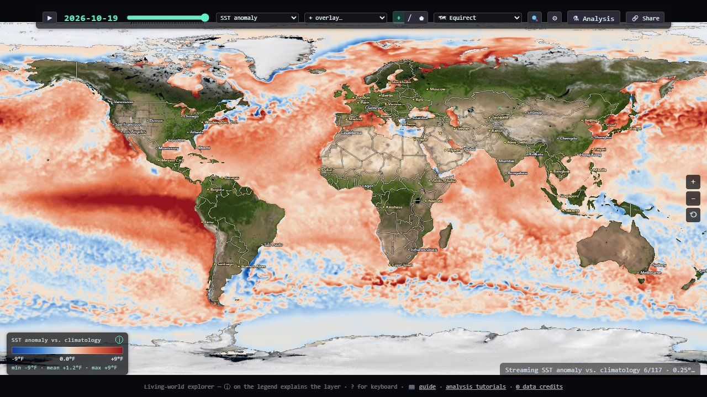
The whole program is one ~7,600-line TypeScript file (src/main.ts) plus
helpers: one loader per data feed in src/live/, an analysis engine in
src/analysis/, and a handful of panels. It has no backend; it is a static web
page.
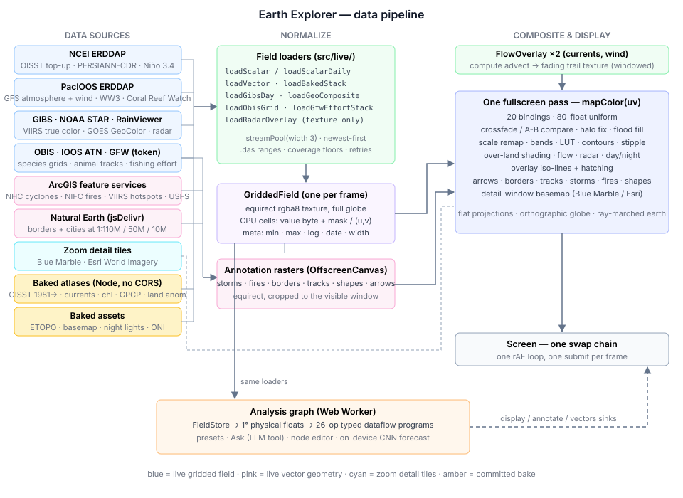
Every dataset becomes the same grid
Each source arrives in its own format: JSON tables from one server, map tiles from another,
GeoJSON polygons, compressed vector tiles, satellite disks. Before anything else, every
field-shaped dataset is converted into one shape, a GriddedField:
- an equirectangular imagecovering the whole globe, longitude −180..180° left to right, latitude +90..−90° top to bottom. Row 0 is the North Pole, column 0 is 180° W. One pixel is one data cell.
- a validity maskin the alpha channel: land, cloud gaps and areas a feed doesn't cover are marked "no data", never silently zero.
- a CPU copyof the same bytes, so hover readouts, charts and statistics never need to read back from the GPU.
Once everything is that shape, every downstream system is written once. The display shader colors a grid. Six map projections and the globe differ only in how they find the grid position for a screen pixel. Particle trails move across the grid. Storms, fires and borders are drawn into grid-aligned images. The analysis engine reads the grid's cells. None of them knows or cares which agency produced the numbers.
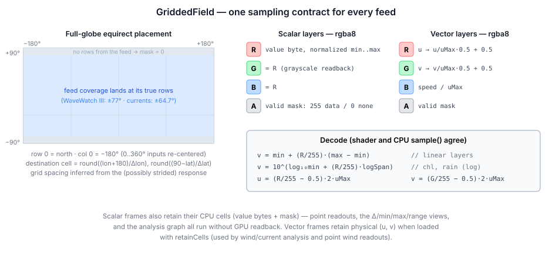
Feeds disagree about conventions: longitude 0..360 or ±180, north-up or south-up, global or a band. Wave data stops at ±77°, the baked currents at ±64.7°. The loader works out each response's grid spacing from the coordinates it actually returned, sizes a whole-globe image from it, and drops every value at its true position. A partial feed lands where it belongs and the rest stays marked "no data".
One byte per value
To keep the GPU textures small, each value is stored as a single byte (0–255) in the red channel, scaled across the layer's physical range. Some quantities span orders of magnitude (chlorophyll from 0.02 to 20 mg/m³, rainfall from a drizzle to a downpour), so those layers store the logarithm instead. One decode function is shared by the shader and the CPU:
decode(byte: number): number {
const n = byte / 255;
if (this.meta.isLog) {
const l0 = Math.log10(this.meta.min);
return Math.pow(10, l0 + n * (Math.log10(this.meta.max) - l0));
}
return this.meta.min + n * (this.meta.max - this.meta.min);
}Vector layers (currents and wind) use the channels differently: red is the east–west speed, green the north–south speed, and blue the overall speed, so the trail animation can read it with one texture fetch. Analysis results use the blue channel for a different job: a flag saying "this cell's estimate failed its significance test" (Part IV).
Why the coastlines don't glow
GPUs smooth an image by bilinear filtering: a sample between four cells blends them. But a land cell stores the value 0. Blend a 22 °C ocean cell with a land cell and you get 11 °C, so every coastline and every cloud gap would get a dark ring. The fix is a one-line trick. The value and the mask are blended by the same weights, so dividing the blended value by the blended mask recovers the average of only the valid neighbors:
- mthe mask (1 = valid), which is also what was multiplied into the stored value
A second fix handles the opposite problem. Data cells are a quarter to one degree across, but the land mask that draws the coastline is 8192 pixels wide, about 2.4 km per pixel. So there is a fringe of pixels that are clearly sea on the coastline but fall in a data cell marked "land". Left alone that fringe shows as an empty dark ring. The shader looks outward from such pixels, up to 4 cells in 8 directions, and fills them with the nearest valid ocean value. Sparse layers such as coral heat stress opt out, because their gaps are real and a fill would invent spiky streaks of heat stress.
Two dozen feeds, and no server
Earth Explorer has no backend. Your browser fetches every number itself, from the agencies that publish them. That is only possible because of one HTTP header, and the exceptions shape the whole design.
Live where possible, baked where not
A web page can only read a response from another site if that site sends a CORS header saying "any page may read this". NOAA's NCEI and PacIOOS ERDDAP servers, NASA GIBS, NOAA STAR, RainViewer, OBIS, the ArcGIS feature services and the jsDelivr CDN all do. So nearly the whole app runs with zero configuration: no proxy, no API keys, nothing to host. The one exception that needs a credential is Global Fishing Watch, which ships with a public token built in.
Sources that send no CORS header can't be read from a browser at all. They are
baked offline: Node scripts in tools/geo/ download them and save
the results as committed image atlases. That covers the 45-year sea-surface temperature
record, currents, chlorophyll, the long monthly rainfall and land-temperature records, the
ETOPO relief and the El Niño index history.
Most live grids come from ERDDAP, a data server used across NOAA and the oceanographic world. Every gridded request has the same shape: a variable, a time, and latitude and longitude ranges with a stride.
A few details of how those requests are made matter more than they look:
- Routing by date. OISST is split between a finalized dataset (2020 to about two weeks ago) and a preliminary one (the newest days). The app reads each dataset's time range once and asks the right one first. Before that, every historical fetch paid a 404 before falling back.
- Silent snapping. ERDDAP's time selector snaps to the nearest available time. Ask past the end of a feed and you quietly get the last frame instead of an error, so loaders de-duplicate by the date that actually came back.
- Caching. A dated request uses the browser's force-cache, because an archived day never changes.
- Comparable payloads. Coral Reef Watch is 0.05° native (7200 × 3600 cells, about 14 MB of JSON per day), so its stride is multiplied by 10 to land on a ~0.5° grid like the other live layers.
The archive that was upside down
The atmosphere layers come from NOAA's GFS weather model, via the PacIOOS ERDDAP server. One day the air-temperature map showed Tibet warmer than the tropical ocean. The cause turned out to be upstream: archived GFS dates are served with latitude flipped, while recent dates are correct. The flip can't be detected from the metadata, so the app asks the data a question whose answer doesn't depend on the season:
// The Tibetan plateau (30N/88E, ~4.7 km up) is colder than the subtropical ocean at its mirror
// point in EVERY season. If the cold end carries the −30 label, the grid is flipped.
const q = `tmp2m[(${timeISO})][(-30.0):120:(30.0)][(88.0)]`;
...
flipped = north - south > 2; // Tibet must be the cold end (kelvin)Two cells, fetched before any GFS date is loaded and cached per timestamp, decide whether to flip the grid. Wave data on the same server checks out clean.
Which hour is "a day"?
GFS is a model with output every 3 hours, but the app shows one frame per day, so it must pick an instant. The default is a 12:00 UTC snapshot. That is early morning in New Mexico, early afternoon in Nigeria and evening in Japan: the "same moment" is a different time of day everywhere. For temperature and sunlight the difference is huge.
That reduction is display-only. The analysis engine keeps reading the literal 12:00 UTC frames, because it has explicit time-reduction operations, and a hidden reduction inside "load a layer" would be a trap. The legend says · daily max when it is on, so a screenshot records which one you were looking at.
Satellite imagery from three directions
Three layers are pictures rather than measurements. They skip the colormap and are drawn as-is, and they can't be analyzed.
- True color (NASA GIBS, VIIRS). GIBS serves pre-rendered tiles in plain latitude/longitude. Its tile grid isn't a power-of-two pyramid: at level 0 a 512-pixel tile covers 288°, so the world fills only part of the grid. The app fetches the 15 tiles of level 2 and crops exactly 360° × 180° (2560 × 1280 pixels). Missing tiles leave holes that show as a dimmed basemap.
- Live clouds (GOES GeoColor). NOAA publishes each geostationary satellite's full-disk picture as a 1808² JPEG in the satellite's own "fixed grid" projection: scan angles as seen from 35,786 km up. The app walks every pixel of a 2048 × 1024 world image, converts its latitude and longitude into each satellite's scan angles, and samples the nearer satellite's picture.
- Radar (RainViewer). The latest global composite, mosaicked from 16 Web-Mercator tiles and reprojected row by row to latitude/longitude. It is blended at 85% over whatever layer is on.
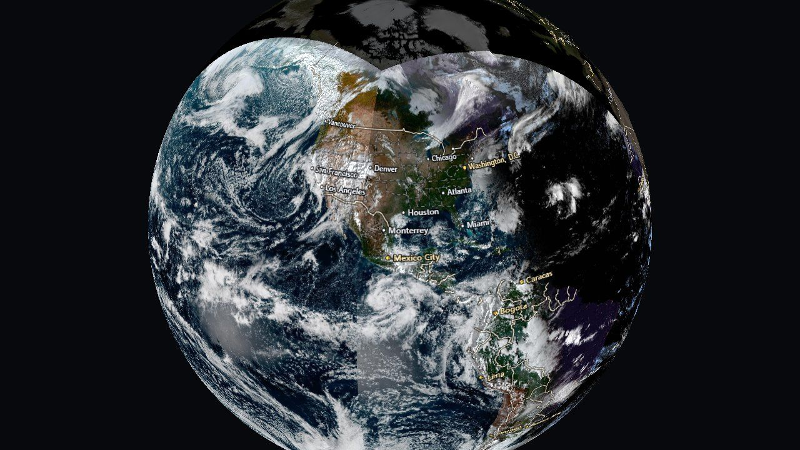
GOES East + West live clouds, reprojected on the CPUStorms, fires and borders
Some of the most important information isn't a grid at all. A hurricane advisory is a few lines and polygons: where the storm has been, where it's forecast to go, the cone of uncertainty, which coasts are under warning. These overlays keep their shapes in memory and draw them into a grid-aligned image (Part VI explains how), following the conventions of the agencies that issue them:
- Tropical cyclones. Six independent queries to NOAA's advisory feature service. Any of them can fail without blanking the others, because a dead layer during a landfall must not clear the map. The cone is filled (the center is about equally likely anywhere inside it; an outline gets misread as the storm's edge), the past track is dotted by intensity at each fix, the forecast track is dashed so it never reads as fact, and forecast labels are spaced by screen distance.
- Wildfires. Three sources that are easy to mistake for one: mapped perimeters (authoritative but hours to days old), incident records (current acreage and containment), and VIIRS thermal hotspots from the last 24 hours (the only near-real-time signal). Hotspots are colored by fire radiative power and faded by age, since color already means intensity and a stale detection should look like weaker evidence, not a cooler fire. The hotspot archive holds about 1.8 million detections, so queries are scoped to the view, ordered by power and capped at 3,000.
- Borders and cities. Natural Earth publishes the same borders generalized by cartographers at three scales. The app picks the scale from the zoom level, so the data itself changes as you zoom, not just its drawing. City labels are thinned by Natural Earth's own editorial rank rather than by population: ranking by population would put every Chinese prefecture city on a world map and drop Reykjavík.
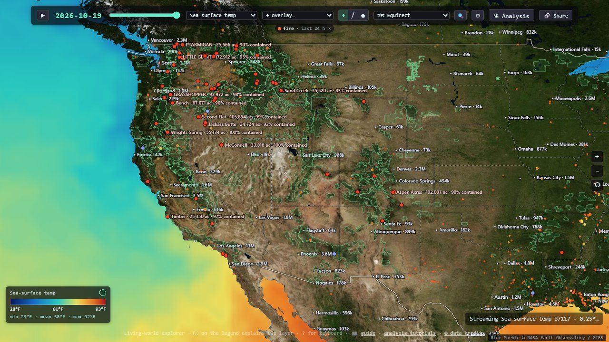
Two more feeds turn non-grid data into grids: OBIS species occurrences arrive as a GeoJSON grid of record counts, painted into an image on a log scale (with a blunt note that counts measure sampling effort as much as abundance), and Global Fishing Watch effort arrives as compressed vector tiles whose features carry one value per month, so a single download yields twelve frames. Where cells overlap the app keeps the maximum, not the sum, because summing would multiply a large Mercator cell's hours by its footprint.
Forty-five years, one frame at a time
A layer isn't one map; it is a stack of dated maps. Getting decades of frames into a browser quickly, and keeping bad frames out, is its own small engineering problem.
Forty-five years in a PNG
NOAA's live OISST server only reaches back to 2020, and it has disappeared for days at a time before. So the full sea-surface temperature record, September 1981 to the bake date, is committed to the repository. A Node script pulls it from CoastWatch and writes three atlases, one each for temperature, anomaly and ice: 539 monthly frames at 1° resolution, about 50 MB in total. Why start in 1981? Because forty-five years is what makes a trend or a 30-year average mean anything. A decade of it is weather.
An atlas is simply one very tall PNG with frame i in rows i·H to (i+1)·H, plus a small JSON file with the dates and the value range. The browser decodes it once, copies each frame into its own GPU texture, and reads the bytes back for the CPU copy. That readback has a trap: the 1° atlas is 360 × 97,020 pixels, and a canvas larger than the browser's limit doesn't throw an error. It silently reads back all zeros, which would mark every cell "no data". So the CPU decode runs in slabs of at most 16,384 rows.
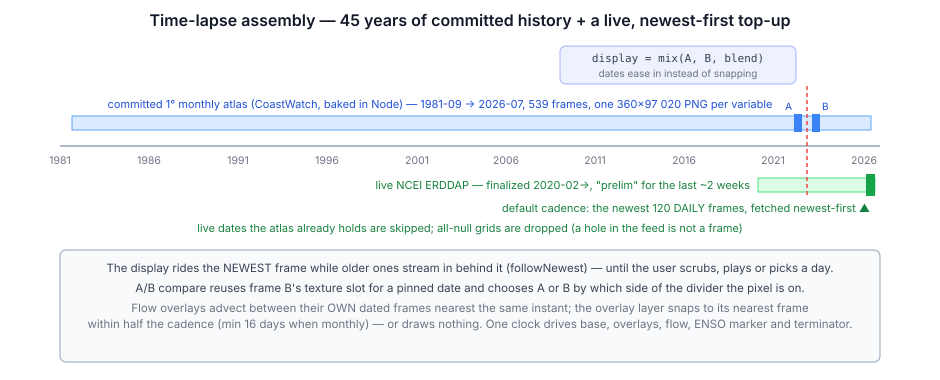
Before any atlas arrives, a single baked 720 × 360 snapshot paints the screen, so the first thing you see is real data, not a spinner. A ?layer= link to something else can race that snapshot, so it only claims the screen if sea-surface temperature is still the layer you asked for.
Newest first
On top of the baked record, the live server tops up everything newer: up to 120 daily frames at the default cadence. They stream through a pool of three parallel downloads, enough that one slow response doesn't stall the rest without overloading the server. The list of dates is kept in chronological order, but the fetch order is reversed, so the first frame on screen is today's and history fills in behind it.
That creates a subtle problem. Each older frame that arrives is inserted before the one on screen, which shifts its index. So the display re-pins itself to the newest frame on every arrival, until you touch anything (scrub, play, pick a day, follow a date link). After that a late arrival never yanks the view away.
Cadence is a setting: one frame every 4, 2 or 1 months walks the calendar back to 1981; finer cadences (two-weekly, weekly, daily) walk days back from the newest data and stop at 120 frames, because a daily cadence is for watching a storm or a bloom evolve, not for scrolling forty years. At the default daily cadence a sea-surface temperature stack is therefore mixed: 539 monthly frames followed by up to 120 daily ones.
When the live server is down (NCEI sometimes answers "unknown datasetID" for hours), the baked stack alone still gives the full timeline, and the live range is retried with exponential backoff, 30 seconds doubling up to 5 minutes. Newer dates simply appear once it is back.
A 200 OK full of nothing
ERDDAP answers some requests with HTTP 200 and a grid where every value is null, for dates a variable doesn't actually cover. Kept as a frame, that blanks the map mid-playback and poisons every average. In the analysis engine it is worse: an all-null ice frame becomes a sea ice extent of exactly 0.00 million km², indistinguishable from an ice-free Arctic. Every loader therefore checks that a frame's mean is a finite number and throws away the frame if not. A related rule from the code's lessons list: absorbing values need finiteness checks, not null checks. value ?? 0 lets NaN straight through, and one NaN poisons every later frame.
Two more defensive habits run through the code. Every asynchronous path carries a generation counter, so a slow response for a layer you've already left is destroyed instead of displayed. And when frames are cleared, every reference to their textures is dropped before the textures are destroyed, so the next GPU submission can never touch a destroyed texture.
Playback, compare and seasons
While playing, the shader crossfades between the current frame and the next, so the map flows instead of stepping. It samples both textures and mixes them by the fraction of time elapsed. Scrubbing or picking a day shows the exact frame.
For judging change by eye, the A/B compare mode is better than any animation. It pins a second date on one side of a swipe divider, reusing the crossfade's second texture slot: instead of easing between frames, each pixel takes one or the other depending on which side of the divider it is. Both halves share one projection, one color scale and one set of coastlines. That is the only way a difference of a degree or two can be judged, because the eye has no memory for absolute color, so flipping between two screenshots doesn't work.
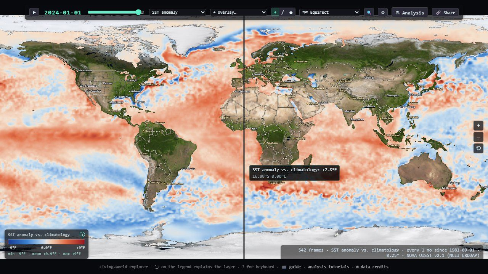
A season filter restricts the stack to some months of the year (winters, say), and everything that reads the stack goes through it: playback, averages, charts, the color fit. The season is written into the legend title as well as the control, because a mean over winters and a mean over everything look alike, and the legend is what survives into a screenshot. The views then turn a stack into new maps, computed on the CPU from the retained cells: the change against N years earlier (still animatable), the mean, minimum or maximum over the years, and the seasonal range.
Every pixel, one function
The entire map is drawn by a single full-screen GPU pass. Each pixel asks "where on Earth am
I?", then calls one function, mapColor(uv), which composites everything at that
spot.
Composing a pixel
The shader has three parts. fs() converts the screen pixel to a grid position
(uv) for the current projection. mapColor() builds the color at that uv,
layer by layer. A short post step adds relief shading and the compare seam. Everything it might
need is bound at once: 20 resources in one bind group, with a 1×1 transparent placeholder for
anything not in use, so the layout never changes. The bind group is rebuilt only when a key made
of the frame dates and each overlay's generation counter changes.
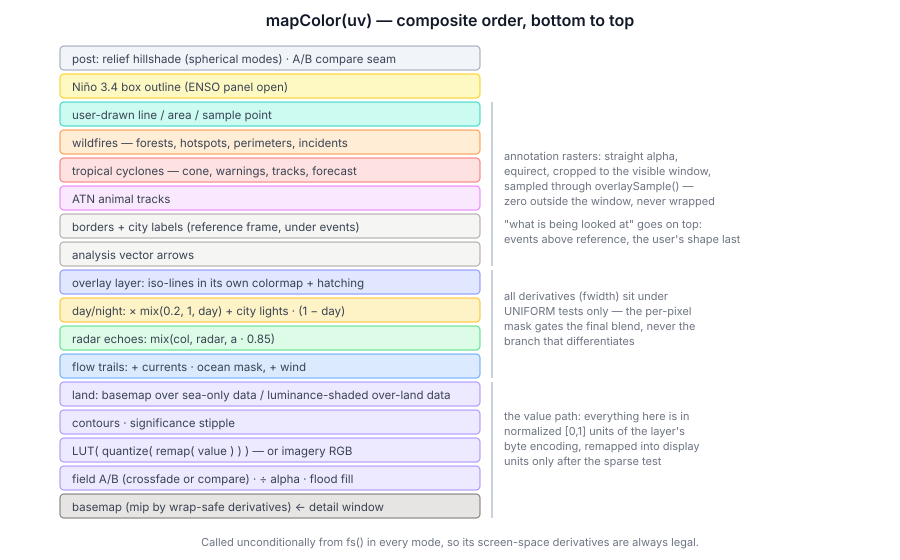
- Basemap. Day imagery with a land mask, or streamed high-resolution imagery when zoomed in. Its mip level is chosen from the uv derivatives, measured twice (once with u shifted by half a turn) and the smaller taken. Otherwise the jump from 1 to 0 at the date line, which some projections put in the middle of the screen, blasts a one-pixel column to the blurriest mip.
- The value. Coverage-weighted sample, coastal fill, then the color scale (next section).
- Over land. Layers like air temperature cover land, so they are tinted by the basemap's brightness there, like shaded relief seen through colored glass, with the coastline etched by mask·(1−mask)·4, which peaks exactly at the shore. Ocean-only layers just show the basemap on land.
- A second layer as contour lines and hatching, then current and wind trails, radar, and day/night shading.
- Annotations, in a deliberate order: analysis arrows, then borders and cities under events (so a state line never cuts across a fire perimeter), animal tracks, cyclones and fires, and finally whatever you are drawing.
Scales, colormaps and steps you can count
A value becomes a color through a 256-entry colormap texture. Before that lookup, a few steps shape it:
- Sparse test. For layers like rainfall, the bottom of the scale means "nothing here" and is drawn as background rather than flooding the planet with the colormap's lowest color. The test uses the raw value, before any remapping.
- Display range. Values are stored over the layer's full range, so narrowing the scale is a shift-and-stretch in the shader, not a re-download.
- Discrete bands (optional): quantize to 5, 8, 10 or 16 levels so a reader can count steps instead of estimating a gradient.
- Lookup, clamped to [0.002, 0.998]. The sampler wraps horizontally for longitude, so an exact 1.0 would blend the colormap's two ends (yellow plus purple makes tan).
The fit button chooses the range for you: the 2nd–98th percentile of the frame on screen, weighted by cos(latitude) (cells shrink toward the poles) and restricted to a drawn region if there is one. It needs no sorting, because the values are bytes: a 256-bin histogram is the exact distribution. Scale, bands and colormap all travel in share links, because the same colors mean different numbers once the range moves.
- fwidthhow much the phase changes across one pixel, so lines stay one pixel wide at any zoom and in any projection
Lines, hatching and dots
A colorbar can only carry one quantity. A second layer therefore takes the visual channels that are left: contour lines tinted by its own colormap, and diagonal hatching above a threshold that matters. How a layer draws as the second layer comes from its own metadata, so any layer can go over any other with no table of pairs:
- an ordinal layer (bleaching alert 0–4, heatwave category 0–5) draws one line per class boundary and hatches from its alert level up;
- a sparse layer hatches above its physical threshold: 4 °C-weeks of heat stress (where coral bleaching starts), 25 mm/day of rain;
- sea ice hatches at the conventional 15% ice edge;
- a continuous layer draws lines only.
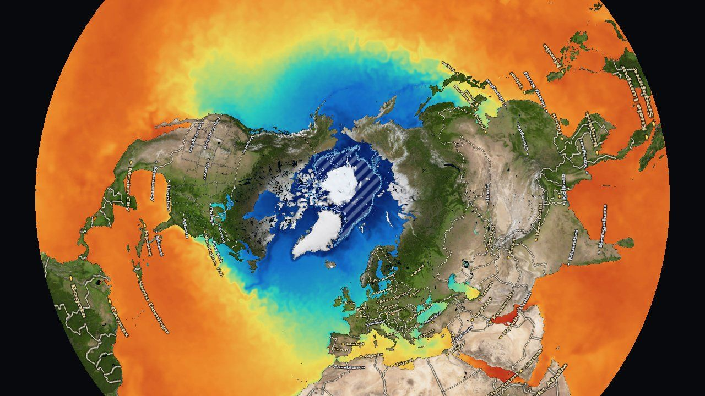
Analysis results add a third visual channel: a significance stipple. A cell whose statistical test failed keeps its color (the estimate exists, the evidence is weak) and gets a dot screen on top. Blanking it would look like missing data. Washing it pale would be worse on the diverging colormaps these results use, because pale reads as "near zero", which is a claim about the value rather than about confidence in it. The dots are spaced in screen pixels, so they stay the same size while you zoom.
Contour lines and hatching use fwidth, which measures how a value changes between neighboring pixels. GPUs compute it from groups of 2×2 pixels running together, so it is undefined if those pixels take different branches. Every fwidth in the shader sits under a test that is the same for every pixel (is an overlay on?), never under a per-pixel test (is there data here?). The per-pixel mask only gates the final blend.
Day, night and a fixed hour
The day/night overlay darkens the map toward the real terminator and fades in city lights on the night side. The sun's position comes from a twenty-line solar formula good to about 0.01°, giving the subsolar point, the spot where the sun is straight overhead. Each pixel then computes the cosine of the sun's angle from its zenith:
- φ, λthe pixel's latitude and longitude
- δ, λsthe subsolar latitude (the sun's declination) and longitude
- ±0.12about ±7° of twilight band
Six flat maps and a globe, from one inverse
Because the display is factored as mapColor(uv), each way of showing the Earth only
has to answer one question: for this screen pixel, which latitude and longitude? That is
a projection run backwards, its inverse.
Every map lies; pick the lie
You can't flatten a sphere without distorting it. Each projection chooses what to keep:
| Projection | Keeps | Inverse (screen plane → lon, lat) |
|---|---|---|
| Equirectangular | simplicity; the data's own grid | the identity: the plane is (lon, lat) |
| Mercator | local shapes and angles | lat = 2·atan(ey) − π/2, to ±85.05° |
| Mollweide | area | θ = asin(y/√2), sin φ = (2θ + sin 2θ)/π, λ = πx/(2√2 cos θ) |
| Equal Earth | area, with a pleasant shape | 4 Newton iterations on a 9th-degree polynomial in θ |
| Arctic / Antarctic | the polar regions (for sea ice) | polar stereographic: lat = ±(π/2 − 2·atan(ρ/2)) |
Pan and zoom live in a normalized frame that is the same for every projection, so the projection appears in exactly one step of the pixel's journey: letterbox to the projection's shape, apply pan and zoom, scale to the projection plane, invert, convert to uv. Every inverse also has a CPU twin, used for clicking and for keeping the view in bounds, and those twins are tested by round trips against independently written forward projections. That test caught a bug twice: in the Equal Earth polynomial, nesting t⁶ where t⁴ belongs compiles fine and looks almost right.
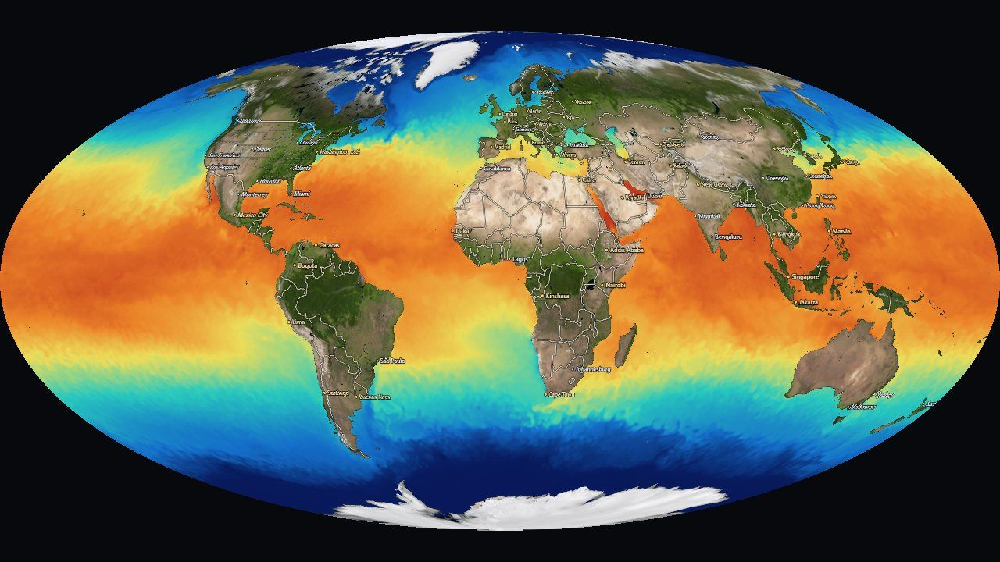
Mollweide · sea-surface temperature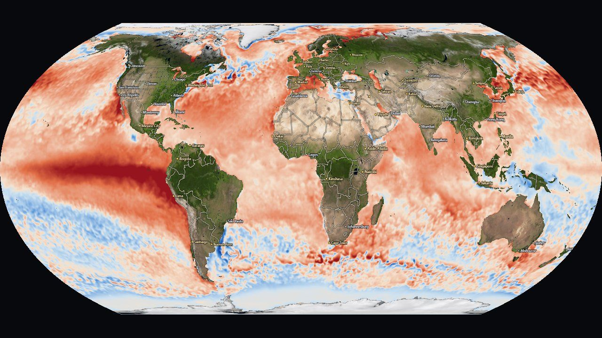
Equal Earth · SST anomaly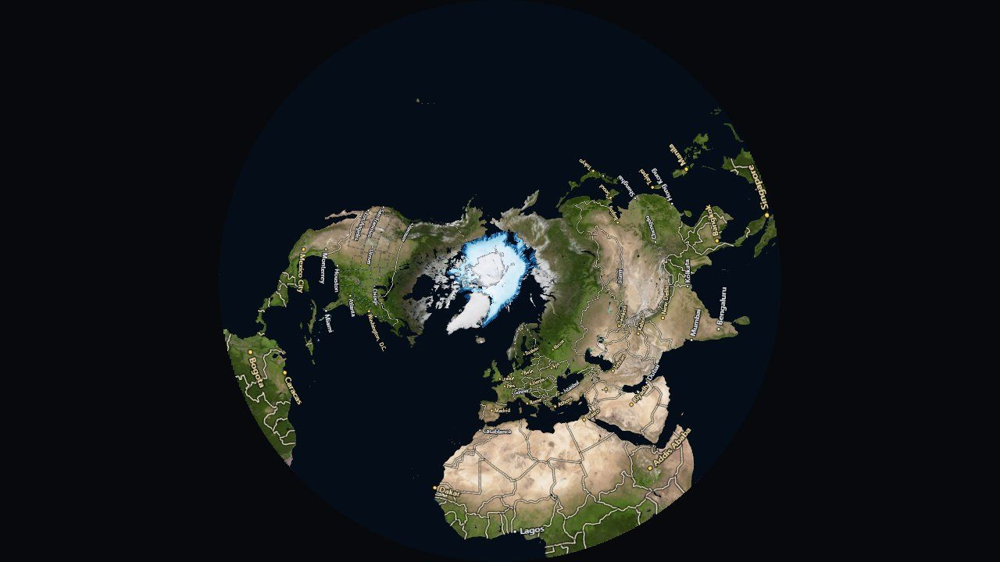
Arctic · sea iceZooming 131,072 times
The flat map zooms from the whole world to about 400 m across the screen, as deep as the aerial photo tiles go. Past about 2,048× zoom, something breaks. A pixel's grid position is computed in the shader as "view center + offset ÷ zoom", in 32-bit floats. Near uv = 0.3 a 32-bit float can only step by about 3 × 10⁻⁸, and at deep zoom one screen pixel is a smaller step than that. Neighboring pixels round to the same uv and the map dissolves into blocks.
The fix moves the hard part to the CPU. Above 2,048× it evaluates the view center in 64 bits, splits it into an exact 32-bit "high" part plus a small residual, and measures the projection's local stretch (its Jacobian) numerically. At that scale every projection is locally a straight-line map, so each pixel only adds small, well-conditioned terms:
let uvRel = u.lin0.zw + u.lin1.xy * duv.x + u.lin1.zw * duv.y; // lo + J·Δ (small terms)
uv = vec2(fract(u.lin0.x + uvRel.x), clamp(u.lin0.y + uvRel.y, 0.0, 1.0));A detail that matters: the CPU fills those uniforms starting slightly below the threshold, so 32-bit rounding of the zoom value can never land the shader in the deep branch while the uniforms are still zero.
A relief globe, ray-marched
The default view is a globe: an orthographic sphere rotated by yaw and tilt. With relief on, the ground isn't a smooth ball. The ETOPO elevation model (−11,000 to +9,000 m, 0.25° cells) is exaggerated 25× at overview zoom and ray-marched through a thin shell, so mountains get real silhouettes on the limb and shift with parallax as the globe turns. Each pixel's ray enters the shell, takes 48 even steps until it drops below the terrain, then refines the crossing with 5 bisections.
The elevation texture stores each height as 16 bits split across two 8-bit channels, which forces manual filtering: hardware filtering would blend the high and low bytes independently and ripple at every low-byte wrap. So the shader reads four texels, decodes each to meters, then blends. A third mode, a perspective orbit camera over the same relief (?proj=earth), still exists as a one-URL experiment. It gives oblique views and a horizon, but at low altitude 0.25° elevation melts into plateaus, a data limit no camera can fix, so it's hidden from the menu.
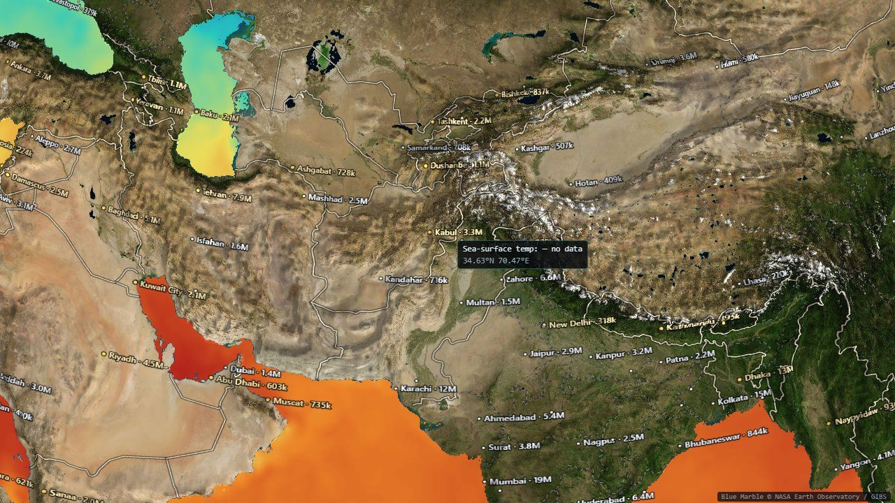
Sharp where you look, moving where it flows
Three systems use the same trick, a window: spend a fixed budget of texels or particles on what is on screen rather than spreading it across the whole planet.
A streamed detail window
The global basemap is 4,096 pixels wide, about 10 km per pixel. Zoomed in, the app streams an equirectangular crop of exactly the visible area from imagery tiles:
- It works out the world width needed for at least one texel per screen pixel.
- Up to 81,920 pixels of world width (level 7, about 488 m per pixel) it uses NASA's Blue Marble shaded relief, whose tiles are already equirectangular.
- Beyond that it switches to Esri World Imagery (sub-meter, zoom 19), which is in Web Mercator. That mosaic is reprojected one destination row at a time: longitude is the same in both projections, so each row is a single one-pixel-tall copy from the right Mercator row.
- The level steps down until the crop fits 110 tiles and 3,200 × 2,304 pixels, and a request waits until the view has been still for 250 ms, so a zoom gesture doesn't spray requests for every intermediate level. The old window stays up until the new one is complete, so there is never a flash back to the blurry basemap.
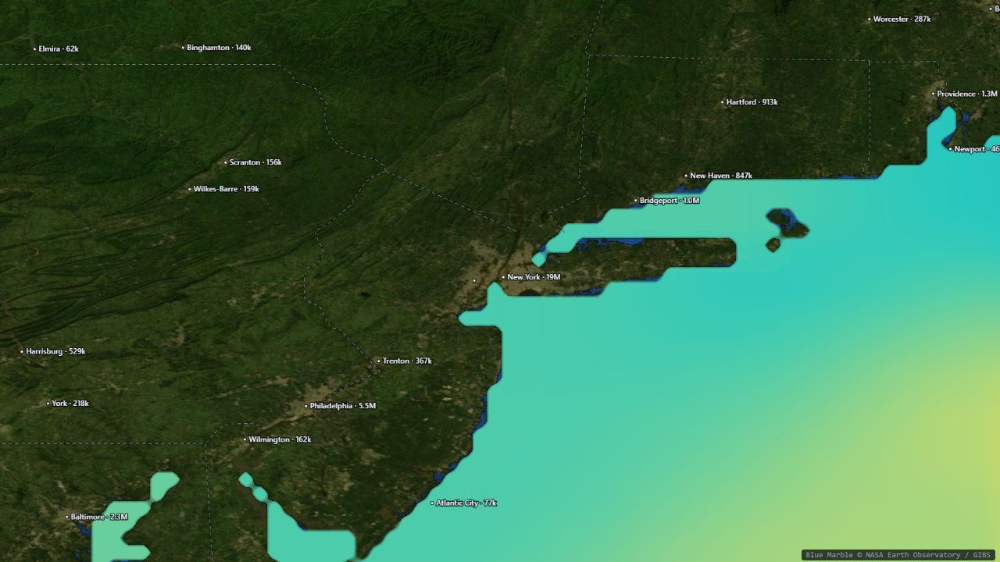
60×: the New York Bight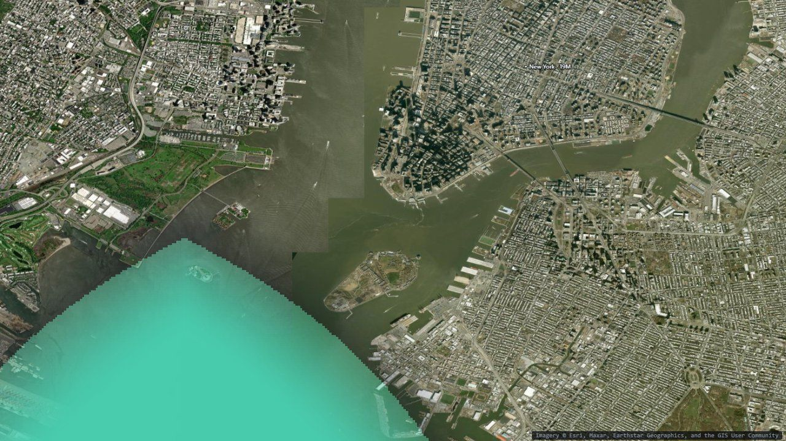
3,000×: New York Harbor, one data cell visibleThe window is purely cosmetic: the land mask, the data, and every number you read still come from the global grids. At 3,000× a single 0.25° data cell covers much of the screen, which is the honest picture of what the data resolves.
Drawing across the date line
Borders, tracks, storms, fires and the shapes you draw are rasterized into an image that the shader samples by uv, like any other layer. That keeps them correct in every projection with no per-projection drawing code. But a world-sized image spends its pixels evenly over the planet: zoomed into a bay, a 2,048-wide raster has about 6 pixels per degree, so a 3-pixel marker becomes a 60-pixel blob. So annotation images cover only the visible window, at the same budget, and are redrawn 200 ms after the view settles.
The subtle part is lines that cross ±180°. The window may straddle the date line, and a path whose points are each wrapped into −180..180 independently is torn in half wherever it crosses. The shared helper unwraps once along the path, then shifts the whole path onto the window's copy of the world:
let prevU = (pts[0].lon + 180) / 360;
const us = pts.map((p) => {
const uu = (p.lon + 180) / 360;
prevU = uu - Math.round(uu - prevU); // continue the previous point's wrap copy
return prevU;
});
const shift = Math.round(us[0] - (overlayWin.u0 + overlayWin.du / 2)); // once per PATHCurrents and wind as living trails
The moving streamlines are a GPU particle system: 9,000 particles for ocean currents and
16,000 for wind. The key decision is that particles live in uv space, the same
grid as everything else. Their trails are just another texture that mapColor(uv)
samples, so they appear correctly on every flat map and on the spinning globe with no extra
work.
- Advect. A compute shader reads the velocity at each particle from both frames around the current time (so the flow evolves smoothly during playback) and moves it. A degree of longitude shrinks with cos(latitude), so east–west motion is divided by it, with a floor of 0.2 near the poles.
- Respawn. A particle that ages out, drifts onto land, stalls below 0.02 m/s or leaves the window is reborn at a random spot with a random starting age, so rebirths never pulse in visible waves.
- Fade, then stamp. Each frame the trail texture is multiplied by (1 − rate), an exponential decay that turns old positions into a comet tail, and then the particles are drawn on top as soft additive dots.
Particles use the window trick too: zoomed out they cover the world; zoomed in they live in the visible rectangle, so all 16,000 are where you're looking. One subtlety: dividing the step by the window's size is geographically exact and unusable. The same 20 m/s wind crosses a 4°-wide window about 90× faster than it crosses the globe, so trails would be 90× longer and the view would fill with white. Multiplying back by the window span keeps the apparent speed and trail length constant at every zoom, while fast still looks faster than slow within any one view. The window only moves 350 ms after the view settles, longer than the other windows, because moving it clears the trails.
A color says where; a number says how much
Every readout in the app (hover, click, a drawn line or area) comes from the CPU copy of the grid, never a GPU readback. The interesting part is doing the arithmetic honestly on a sphere, and saying what each number does and doesn't mean.
Click a point, get its history
Hovering shows the value under the cursor, including an explicit "no data" over land or a cloud gap, because an empty tooltip reads as broken. Clicking plots the whole stack at that point, with its minimum, mean, maximum and a least-squares trend per decade. (Trends are differences, so in Fahrenheit they scale by 9/5 without the 32° offset.)
A long record drawn end to end buries the question people usually bring to it, "is this year unusual for the time of year?", under the seasonal cycle. The by year view folds the series onto January–December: one gray line per year, the latest in blue, and a note that ranks the newest month against the same month in every year. It ranks per-year means, not raw samples, because the live tail is daily and the baked record monthly, and counting samples would let one month's 26 daily values outvote 45 years.
Averages on a sphere
Drawing an area gives its mean value over the whole stack. On an equirectangular grid that needs care: every row of cells looks the same width on the map, but a cell near the pole covers far less of the Earth than one at the equator, in proportion to cos(latitude). An unweighted average would be dominated by the Arctic. Every spatial average in the app, in the readouts and in the analysis engine, weights cells by cos(latitude).
The area readout also reports the spread inside the region as a standard deviation, not a standard error. Neighboring cells are strongly correlated, so dividing by √(number of cells) would claim a precision the data can't support. And it reports coverage, with the worst coverage across the series shown up front, because a mean over a polygon that is mostly land or cloud is a real number about only a small part of the shape.
Lines on a sphere
A drawn line becomes a transect: value against distance along the line. But a straight line on an equirectangular map is not the shortest path on Earth. The app follows the great circle through each pair of points, densified with a step that shrinks as you zoom in.
CSV files that remember where they came from
Every readout exports to CSV, and every file starts with a commented header: what the numbers are and their units; the product, provider, access path, reference URL and license; the layer's caveats; the grid actually used; a warning if the data was decimated; and notes if it came from a derived view or a season filter. A CSV outlives the page that produced it, and one that has lost track of its product and units still looks authoritative, which is worse than having none. The same thinking drives the Get this data panel, which rebuilds the exact request behind the frame on screen, with download links, ready-to-run Python (xarray) and R snippets, and a citation with the access date.
A small language for big questions
The ⚗ Analysis button opens the other half of the app: a typed dataflow language that runs over the same data, entirely in your browser.
Programs as graphs
A program is a flat list of nodes. Each applies one operation, and its inputs name the nodes that feed it, so the whole program is a directed graph with no loops and no conditionals. That keeps every program safe, guaranteed to finish, and cheap enough to re-run on every edit. Here is "is sea temperature correlated with wind speed?":
{ "nodes": [
{ "id": "sst", "op": "layer", "params": { "layer": "sst", "start": "2023-01", "stepMonths": 2 } },
{ "id": "wind", "op": "layer", "params": { "layer": "wind", "component": "speed", "start": "2023-01", "stepMonths": 2 } },
{ "id": "r", "op": "correlate", "inputs": { "a": "sst", "b": "wind" }, "params": { "mode": "temporal" } },
{ "id": "map", "op": "display", "inputs": { "value": "r" } }
] }Every connection carries one of five types, checked before anything runs:
| Type | What it is | Made by |
|---|---|---|
stack | a layer over a date range: time × latitude × longitude | layer, forecast |
field | one map: a moment, or a reduction over time | timeReduce, trend, temporal correlate |
series | one value per time step | areaMean of a stack, enso |
scalar | a single number | areaMean of a field, correlateSeries |
region | a box, a preset, or a drawn polygon | region |
There are 26 operations in all: sources (layer, enso,
region, forecast), transforms (mask, filter,
derive, anomaly, lag, selectFrames,
isoline), reductions (areaMean, timeReduce,
trend), combinators (math, correlate,
correlateSeries, regress), and sinks that produce results
(display, chart, answer, scatter,
histogram, hovmoller, annotate,
displayVectors). One table in src/analysis/ast.ts defines every op's
ports and parameters, and the validator, the graph editor's palette and the LLM's tool schema are
all generated from it. Adding an op is one table entry plus one implementation.
Fields cross into the analysis world as real physical numbers (°C, m/s, hPa) on a fixed 1° grid (360 × 180 cells), with NaN for no data. Runs execute in a Web Worker so the map keeps animating, with a cache that remembers every node's result, so editing one node only recomputes what depends on it. Before running, the interpreter estimates the total work (cells × frames summed over nodes) and refuses anything above about 200 million cell operations, with a hint to narrow the dates, rather than freezing the page.
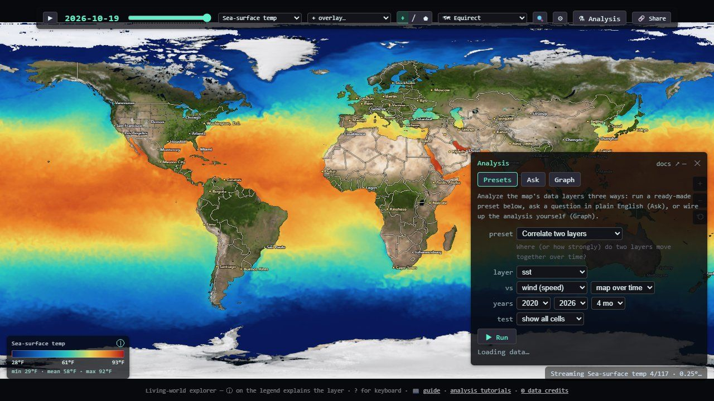
Rules every operation follows
- area weightingevery spatial reduction weights cells by cos(latitude), as in Part VII.
- date pairingwhen two stacks or series combine, frames pair by nearest date within half the coarser cadence (at least 16 days); unpaired frames drop out. The map's overlay uses the same rule.
- minimum samplesper-cell statistics over time need at least 8 paired samples; cells with fewer are left blank.
- autocorrelationneighboring cells and consecutive months aren't independent, so raw sample counts overstate certainty. Significance tests use an effective sample size corrected for autocorrelation (Bretherton et al. 1999), and results that fail are stippled, not hidden.
Autocorrelation is easiest to see with real data. El Niño evolves over months, so the Niño 3.4 anomaly in one month is a good predictor of the next. Correlating the series with a lagged copy of itself shows how long that memory lasts, and how much it shrinks the number of truly independent samples:
El Niño, from index to outlook
El Niño is a warming of the central and eastern equatorial Pacific that shifts rainfall and temperature patterns around the world. Its standard index, the Oceanic Niño Index (ONI), is the 3-month running mean of the Niño 3.4 box anomaly. NOAA's rule calls an El Niño (or La Niña) when the ONI stays at or above +0.5 °C (or at or below −0.5 °C) for at least five consecutive overlapping seasons. The app computes it from its own baked record, extended live from NOAA, and agrees with the official index to about 0.1 °C. (The official ONI uses a different dataset and baseline.)
The language turns that index into maps. The standard teleconnection recipe fits, for each grid cell, how much a season's rainfall moves per degree of ONI:
layer(precipmon) → selectFrames(12,1,2) → timeReduce(mean, per: run)
→ anomaly(monthly, 1991–2020, as: percent) → regress(predictor: enso)- One season at a time. Keep December–February, then average each winter into one frame. Mixing seasons whose response differs blurs the answer, and single months carry weather noise that a season averages out.
- Percent of normal. A 1 mm/day excess is a flood in a desert and noise in a monsoon, so rainfall anomalies are expressed as percent of the 1991–2020 normal.
- Regress, and cross-validate.
regresscan output the slope, a prediction at a given ONI, or a skill map: the percent of variance explained, where each sample is predicted from a fit that excludes the 12 months around it, so other months of the same season can't leak the answer. Skill at or below zero means "no better than the long-term normal: don't trust the outlook here".
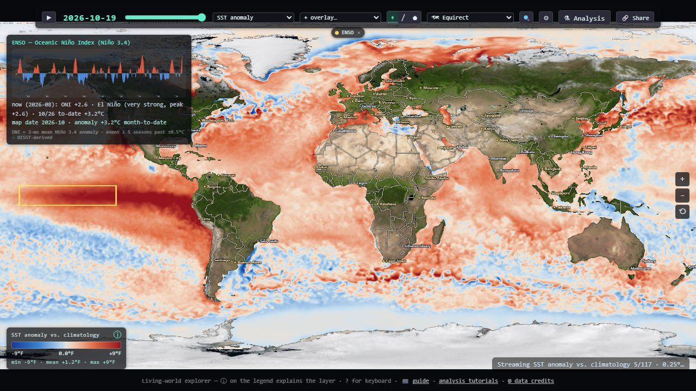
A forecast that runs in your browser
The forecast op rolls the sea-surface temperature anomaly forward one to six
months with a small convolutional neural network: about 190 KB, trained offline on the app's own
baked 1981–2025 record and run in the browser with LiteRT.js (WebGPU accelerated, with a
WebAssembly fallback). It reads the last four monthly 1° anomaly maps and predicts the
change from persistence (next month = this month + a learned correction), feeding each
prediction back in for the next month.
- validation12 held-out months (August 2025 to July 2026): mean absolute error 0.46 °C, against 0.50 °C for simply assuming nothing changes
- statuslabeled a demonstration model, not an operational forecast; skill decays with each month predicted
- compositionits output is an ordinary stack, so it can be
mapped, averaged over the Niño 3.4 box, and fed into
regressas the predicted ONI, which is how the built-in El Niño winter outlooks work
Letting an LLM write the program
The Ask tab sends your question to Claude or Gemini (you paste your own API key; it stays in your browser, and calls go direct with no proxy). The model doesn't answer from memory. It writes an analysis program through a tool whose JSON schema is generated from the same op table, and the program runs locally on the real data:
- Validate and repair. Validation errors come back as structured objects (node, port, parameter, message, hint), the same ones the graph editor shows as red badges, and the model fixes its own program. The schema deliberately avoids the API's strict mode: strict grammars are compiled server-side, and a language this size exceeds their limits, so the repair loop provides the guarantee instead.
- Grounded answers. Sinks like
answerandannotatereturn numbers, sample counts and the coordinates of extremes, so the model can narrate where things are without inventing values. - Two vendors, one loop. Everything except the API round trip is shared. The
Claude provider (default model
claude-opus-4-8) uses the SDK's tool runner; Gemini (gemini-2.5-pro) has a hand-written tool loop, and its schema needs one rewrite (constbecomes a single-valueenum). Only the chosen vendor's SDK is ever downloaded. - Shareable. Programs round-trip as JSON and as ?prog= links, so an answer can be re-run and checked by anyone.
What kept biting
A few lessons recur across the code, and they generalize to any data visualization.
- Check for finite, not for null. ?? 0 lets NaN straight through, and one NaN poisons every later frame and average.
- A 200 full of nulls is still a hole. Reject empty grids at every loader, or they pass as measurements, like an ice-free Arctic that never happened.
- Settle before you pay. Imagery (250 ms), annotations (200 ms) and flow windows (350 ms) all wait for the view to stop moving, each for its own reason.
- Keep derivatives in uniform control flow. Every fwidth sits under a test that's the same for all pixels; per-pixel masks only gate the blend.
- Say what the picture can't. The sampling hour, the baseline, the decimation, the season and the significance filter go into legends, CSV headers and citations: wherever the output will outlive the page.
- Don't trust a feed's metadata. Servers advertise more time than they serve, snap silently to the nearest date, and occasionally serve the world upside down. Coverage floors, date de-duplication and the Tibet probe all exist because the data said otherwise.
For the full technical detail, the repository's deep dive covers every subsystem, the analysis reference documents every op, and the tutorials walk through building programs in the graph editor.
Data & references
Data sources
NOAA OISST v2.1 (NCEI, CoastWatch); NOAA Coral Reef Watch; NOAA WaveWatch III, GFS and Coral Reef Watch via PacIOOS ERDDAP; NOAA PERSIANN-CDR; GPCP v2.3 and GHCN-CAMS via NOAA PSL; CoastWatch geostrophic currents and VIIRS chlorophyll; NASA GIBS (VIIRS true color, Blue Marble); NOAA STAR GOES GeoColor; RainViewer; NOAA/NWS National Hurricane Center advisories; NIFC/WFIGS wildfire perimeters and incidents; VIIRS active-fire hotspots; USDA Forest Service boundaries; OBIS; US IOOS Animal Telemetry Network; Global Fishing Watch; Natural Earth; ETOPO1; Esri World Imagery. Basemap © Solar System Scope (CC BY 4.0). The small basemap embedded in this page's demos is a downscaled copy of the app's.
References
- R. W. Reynolds et al. “Daily High-Resolution-Blended Analyses for Sea Surface Temperature.” Journal of Climate 20, 2007. OISST.
- NOAA Climate Prediction Center. Cold & Warm Episodes by Season (ONI definition).
- C. S. Bretherton, M. Widmann, V. P. Dymnikov, J. M. Wallace, I. Bladé. “The Effective Number of Spatial Degrees of Freedom of a Time-Varying Field.” Journal of Climate 12, 1999. Autocorrelation-adjusted sample size.
- B. Šavrič, T. Patterson, B. Jenny. “The Equal Earth map projection.” International Journal of Geographical Information Science 33(3), 2019.
- J. P. Snyder. Map Projections: A Working Manual. USGS Professional Paper 1395, 1987.
- NOAA/NESDIS. GOES-R Product Definition and User's Guide, Volume 5 (ABI fixed grid).
- B. Simons et al. ERDDAP, NOAA NMFS SWFSC Environmental Research Division.
- Astronomical Almanac. Low-precision formulas for the Sun's position.